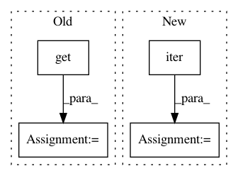

2f85c7fe83c831a41743b4aa67e94f4eb69cdb68,tmtoolkit/preprocess.py,_PreprocWorker,run,#_PreprocWorker#,309
Before Change
def run(self):
// print("worker %s running" % self.name)
while True:
next_task, task_kwargs = self.tasks_queue.get()
// print("worker %s got task `%s`" % (self.name, next_task))
if next_task is None: // a task of None means shutdown
self.tasks_queue.task_done()
break
After Change
def run(self):
// print("worker %s running" % self.name)
for next_task, task_kwargs in iter(self.tasks_queue.get, None):
//next_task, task_kwargs = self.tasks_queue.get()
// print("worker %s got task `%s`" % (self.name, next_task))
// if next_task is None: // a task of None means shutdown
// self.tasks_queue.task_done()
// break
exec_task_fn = getattr(self, "_task_" + next_task)
if exec_task_fn:
exec_task_fn(**task_kwargs)
else:
raise NotImplementedError("Task not implemented: `%s`" % next_task)
// print("worker %s has tokens from `%s`" % (self.name, list(self._tokens.keys())))
self.tasks_queue.task_done()
self.tasks_queue.task_done()
def load_tokenizer(self, custom_tokenizer):
self.tokenizer = custom_tokenizer
In pattern: SUPERPATTERN
Frequency: 3
Non-data size: 4
Instances
Project Name: WZBSocialScienceCenter/tmtoolkit
Commit Name: 2f85c7fe83c831a41743b4aa67e94f4eb69cdb68
Time: 2017-08-22
Author: markus.konrad@wzb.eu
File Name: tmtoolkit/preprocess.py
Class Name: _PreprocWorker
Method Name: run
Project Name: onnx/onnx-coreml
Commit Name: c7d901d0c1a6852f95f28ebf1bc5ea25e08e7eac
Time: 2019-02-10
Author: dmitry.begeza@gmail.com
File Name: onnx_coreml/_operators.py
Class Name:
Method Name: _convert_upsample
Project Name: facebookresearch/pytext
Commit Name: d81ccf0d45db08c5ca74192df51af4e731827e23
Time: 2019-01-15
Author: barlaso@fb.com
File Name: pytext/metric_reporters/disjoint_multitask_metric_reporter.py
Class Name: DisjointMultitaskMetricReporter
Method Name: __init__